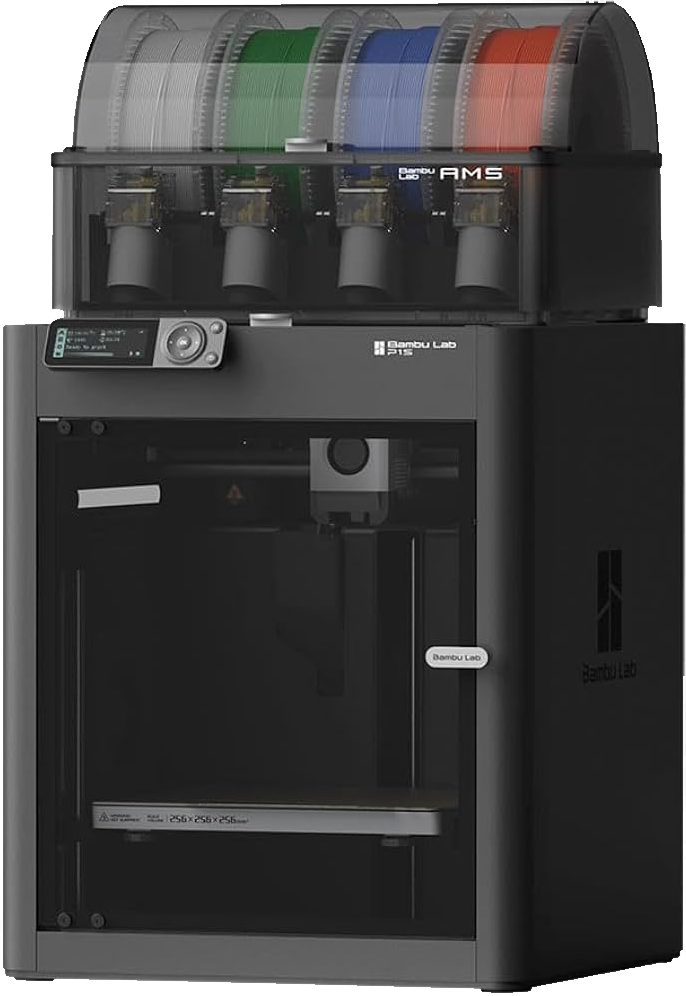

Impression 3DOOmade
impriméesous vos yeux
Une monture provisoire imprimée à la forme de vos verres, le temps de choisir vos prochaines lunettes.
Dans nos 3 magasinsNogent-le-Rotrou · Brou · La Loupe